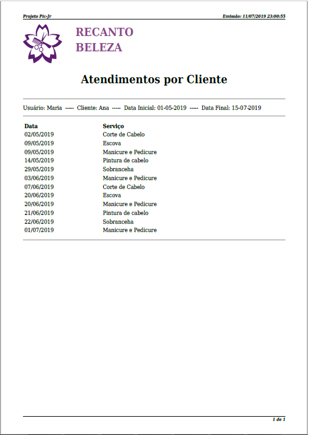

Categoria: Relatório
Orientação: Documento de Relatório
- Coloque uma data e um horário de emissão no relatório, para que o usuário não se confunda depois;
- Insira a logo dos sistema logo no início;
- Escreva um título coerente para o Relatório, cujo motivo dos dados seja facilmente entendido;
- Inclua, logo no início, todos os filtro utilizados para gerar aquele relatório, na ordem em que estavam na Tela de Filtro:
- Consequentemente, o usuário entenderá quais filtros foram usados mesmo depois de muito tempo.
- Dê uma largura razoável a cada coluna;
- Ponha a página atual e o total de páginas em algum lugar da tela.
